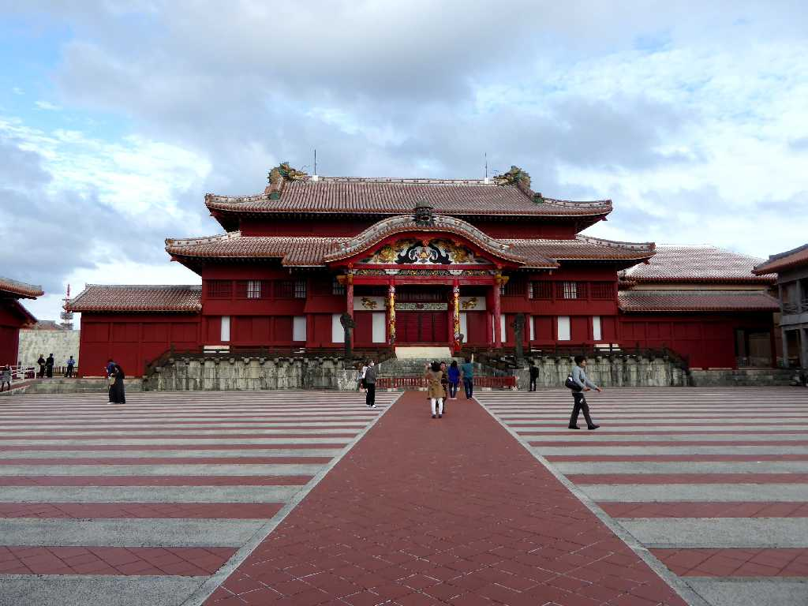
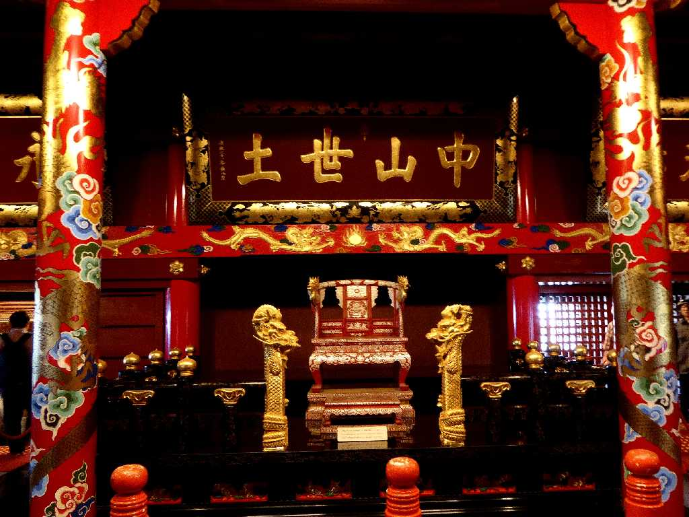
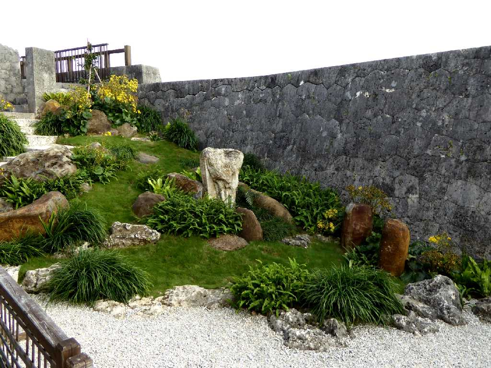
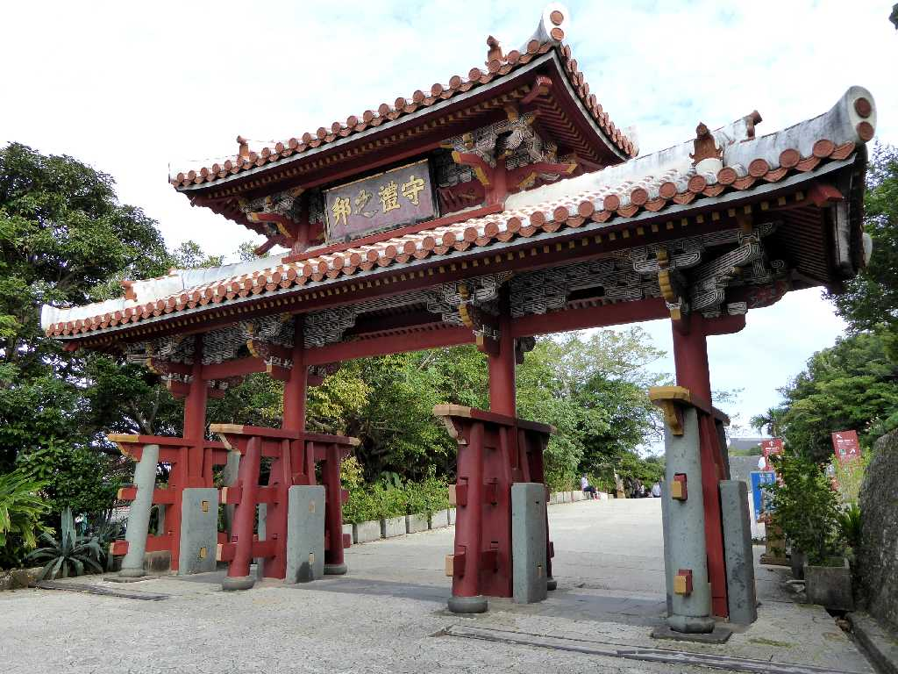
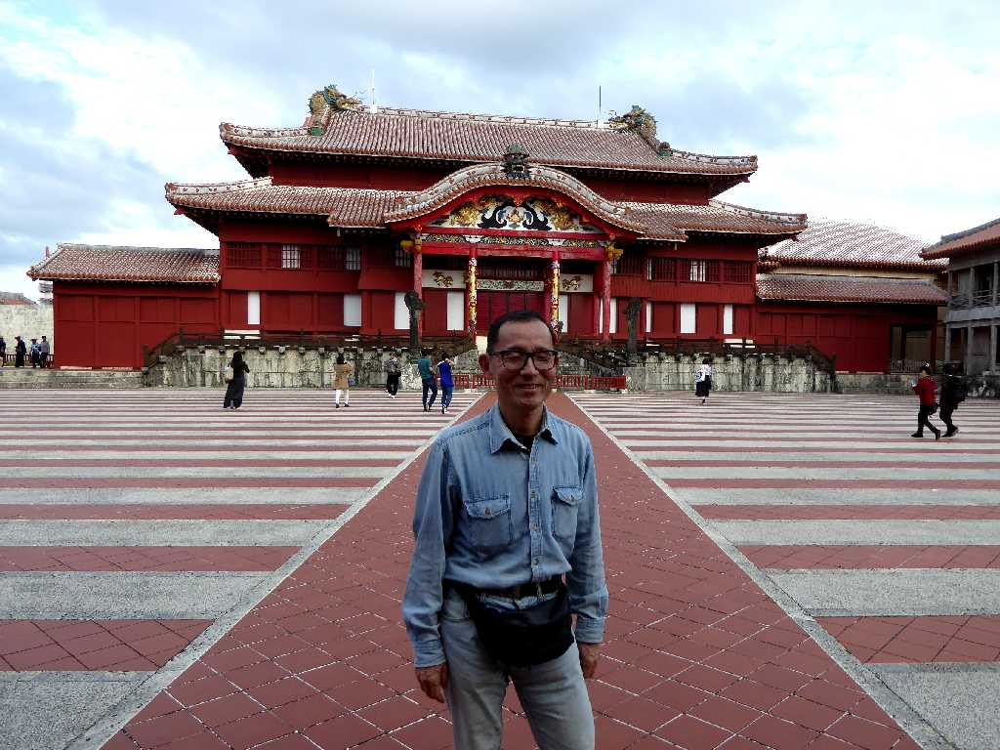

Seiden Syurijo Naha Okinawa
琉球王朝の居城で１９９２年に再建された首里城正殿

Seiden Syurijo
首里城正殿内の玉座

Teien Syurijo
４０年余り前に訪れた時は基礎しか残っていなかった

Syureinomon Syurijo
守礼の門は１９５８年に再建されたもので４０年余り前を思い出せる

December 20 2015 Syurijo